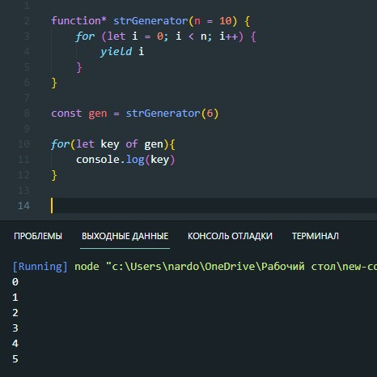

Генераторы – новый вид функций в современном JavaScript. Они отличаются от обычных тем, что могут приостанавливать своё выполнение, возвращать промежуточный результат и далее возобновлять его позже, в произвольный момент времени.
Создание генератора осуществляется с помощью оператора *(звездочки)
ключевое слово yield - это точка остановки выполнения функции. Дойдя до этого момента функция вернет объект вот такого вида
Что бы получить это значение мы должны присвоить переменной результат выполнения генератора и затем вызвать метод next
мы можем запустить цикл и на каждой итерации цикла вызывать метод next генератора
В данном примере мы вызвали метод next больше чем количество yield в генераторе. Последний вызов вернул нам объект с value - undefined и done - true
В JavaScript существуют итерируемые типы данных. К таким например относятся массивы и строки. Итерироваться можно с помощью цикла for of
Как можно узнать итерируемый ли у нас элемент. Можно в консоле вывести нужный элемент и посмотреть есть ли в прототипах свойство Symbol(Symbol.iterator)
Интересно то, что мы можем итерироваться по генератору
